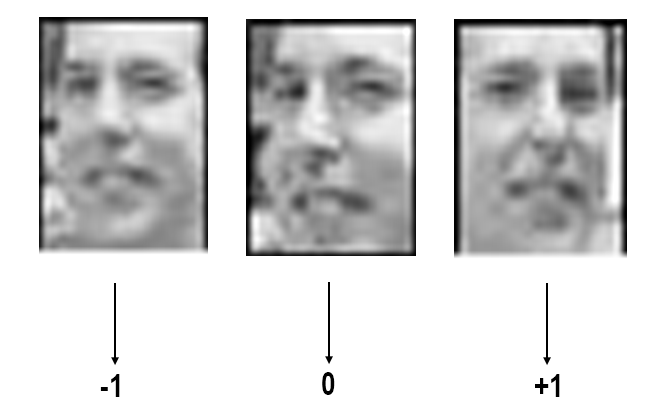
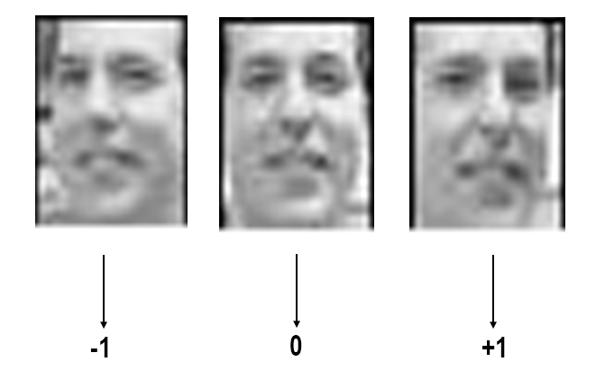

Back
On language, categories and autoencoders
What does a word really mean?
I have often been troubled by the varieties of taps that are there in this world. Back in the good old days, taps used to be simple. If you remember a tap from 10 years back (although I wonder why would you do that), maybe in your home or school, you would find that all of them looked pretty similar. Or at least they had the same way of operating - you twist a valve and water comes out. With time, taps have evolved to have so many mechanisms - you have to press a button for some, and pull a lever for others. And God forbid, if it operates by IR, you fumble around trying to figure out how exactly to make the thing work. The sophistication is so high, it is not uncommon to see taps which allow you to move a handle in the radial space, where controls magnitude of flow, and controls the temperature.
Although taps can be so dissimilar, we refer to all of them by one word. And it captures the essential “attributes” that are required for an object to belong to the “category” of taps. For example, in this case, if an object does not have an outlet for water to come out, it won’t qualify as a tap. It is an essential attribute. There are also some subconsciously presumed attributes and biases - like it is more likely to supply a liquid (likely water) than solids (eg. candies) or gases. Or that it would have a control mechanism to stop the flow. If you think like this, you might realise that most words are categories. Even actions like “dancing” or “working” are categories.
So it seems like words are a way for the brain to abstract out patterns from the great variety of chaotic things that occur in the world. They are a distilled representation where the information from a variety of experiences is clustered and only the common essential part is kept. The existence of such representations which are shared in a community allows for efficient communication of information. The intersection between categories and words was explored by cognitive linguist George Lakoff in this book Women, Fire and Dangerous Things.
Autoencoders and the information bottleneck
Our brains try to reduce the cognitive load on them by processing less than what is bombarded on our senses. We pay more attention to things that are likely to change or impact us than the other, relatively constant things. The architecture of an autoencoder reflects such a philosophy. Autoencoders are trained to map a given input in a very high-dimensional space to a vector in a small space, so that information contained in the tiny vector is sufficient to reconstruct the input.

Consider this experiment by Elvis Dohmatob, where he trains a variational autoencoder on 1800 face photos of a single person. The photos are taken from different angles, and they also vary in the amount of smile that the person has on his face. The VAE is trained to map a face to a 2D point using an encoder, and then a decoder reconstructs the face from the 2D point from the ground up. It is in the model’s interest to encode the factors that vary the most into this 2D point, because this is all the infomation that it would have while reconstructing. In his demo, Elvis shows that it is indeed these two factors - “pose” and “humor” that are encoded in the mapped point. The other facial features which are constant are embedded into the weights of the decoder, kind of like priors. In the final demo, you can change the values of the encoding to create faces having different poses and degrees of smile.
I find this really exciting because this shows how the network is deriving “attributes” like humor on its own based on a variety of experiences that it comes across.
Learning a space of representations
Beyond learning just attributes and categories, the mind is also capable of using these attributes to come up with new categories. For example, what if something has an upper body like a man, and lower body like a horse. We made a new category for that, and made a new word - centaur. Such a feat also suggests the implicit notions of similarity between categories based on attributes, viz. a centaur is similar to a horse in terms of its legs.
When an autoencoder learns to encode inputs into vectors, the vectors should be similar for inputs having similar attributes. For example, if a face looking slightly left gets a value of -1 for “pose”, and a face looking slightly right gets +1, then a face which is looking straight ahead should have a “pose” value close to 0, denoting that it is similar to both in terms of the pose. This enables inputs to be compared on the basis of attributes. However, there is nothing stopping the autoencoder to do well in its task viz. reconstructing the input, even if it maps a right profile face to a pose value of 0. All it needs is to learn some kind of one-to-one correspondence from the face to a vector and back to a face. It can be like a hashmap where the hashes need not have any relation or meaningful pattern when compared amongst themselves. To avoid such a situation, we have to move to variational autoencoders.
Variational Autoencoders
Variational autoencoders have roughly the same architecture as autoencoders, but the training procedure differs a lot. Let’s take an ordinary autoencoder called Dobby. Now Dobby is given the task of mapping faces to 2D vectors and then back. After sometime, you see that Dobby is mapping faces to pose1 values like this:

We will call these Face1, Face2, and Face3 respectively. You are clearly not happy with this because of the things discussed in the previous section. So now you decide to mess with him. When Dobby maps input faces to values, you perturb them by adding a random Gaussian noise. If Dobby mapped a face to -1, due to your mischief, it can go to -0.2 or -1.4, or any other number with varying probability. Poor Dobby now has to make do with the new scheme of things, and somehow decode the perturbed values to get back the original face.
Let’s say that Dobby is trying to convert a 2D vector to a face, where the value of the pose attribute is 0. Now, it could have been so that the input face was originally encoded to 0, or that it was encoded to 1 and perturbed to 0, or perturbed from -1 to 0. The decoder doesn’t know. So Dobby will try to minimize the risk. If the input was actually Face1 or Face3, then generating a frontal face is a good strategy on average, since it wont be very different from the slightly left or slightly right face. It is anyways better than generating a very different face like he is doing right now. But what if the input was origianlly Face2, and there was no perturbation? Generating a frontal face would be really bad then. If only he would have encoded Face2 to some other value like -1.5, and frontal faces to 0, he wouldn’t have had to face this dilemma .So Dobby learns from his mistakes, and over time, changes the way it encodes faces, so that a frontal face gets a pose value of 0.

The perturbations will still trouble Dobby, but he has learnt to encode in a way that ensures he is able to decode something similar to the input face with high probability even with the perturbations.2
Choosing the right loss function
Note that all we have achieved by using variational autoencoders, is that similar inputs get mapped close-by in the embedding space. So two points being similar in the input space will lead to lesser distance between their encoded values in the embedding space. I have not discussed what should be the similarity metric in the input space. But clearly, the choice will have profound impact on whatever representations the network would learn. The loss function between input and reconstructed output effectively acts as a similarity measure. Lesser the loss, more similar the images. In case of images, like the faces illustrated before, comparing two images pixel-wise seems to work well. So is just the categorical crossentropy between actual and predicted pixel intensity values, averaged over all pixels of an image.
Researchers have also used variational autoencoders to model sentences.3 But unfortunately, we are yet to come across a good similarity metric (or the loss function) for two sentences. Currently there are word-level comparisions to calculate similarity between sentences which is hardly enough. For example, “How are you?” and “Hello how are you?” are very similar sentences, but if we calculate the similarity by looking at words at corresponding positions (how vs hello, are vs how), the similarity can be very low. An additional roadblock is that whatever loss function you end up choosing must be differentiable for the model to be trained end-to-end.
Written by Kundan Krishna on 28th September 2017
- Although I use the word “pose” value here, while training it is just a position in the 2D vector embedding. We call it the “pose” value after the model is trained because we note that changing it changes the pose of the generated faces. ↩
- This is an oversimplified childish description of the training procedure of variational autoencoders. The actual training differs. For example, while training variational autoencoders, the model itself chooses how much variance to put in the Gaussian noise, depending on the input, and is incentivised to choose a higher variance. Please have a look at this excellent tutorial from where I learnt about VAEs. ↩
- Bowman, Samuel R., et al. “Generating sentences from a continuous space.” arXiv preprint arXiv:1511.06349 (2015). ↩